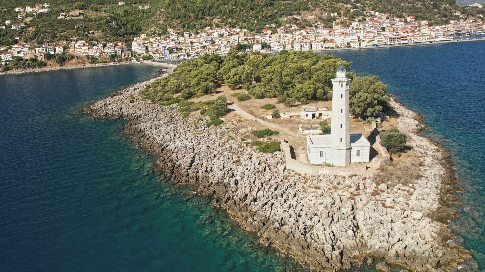
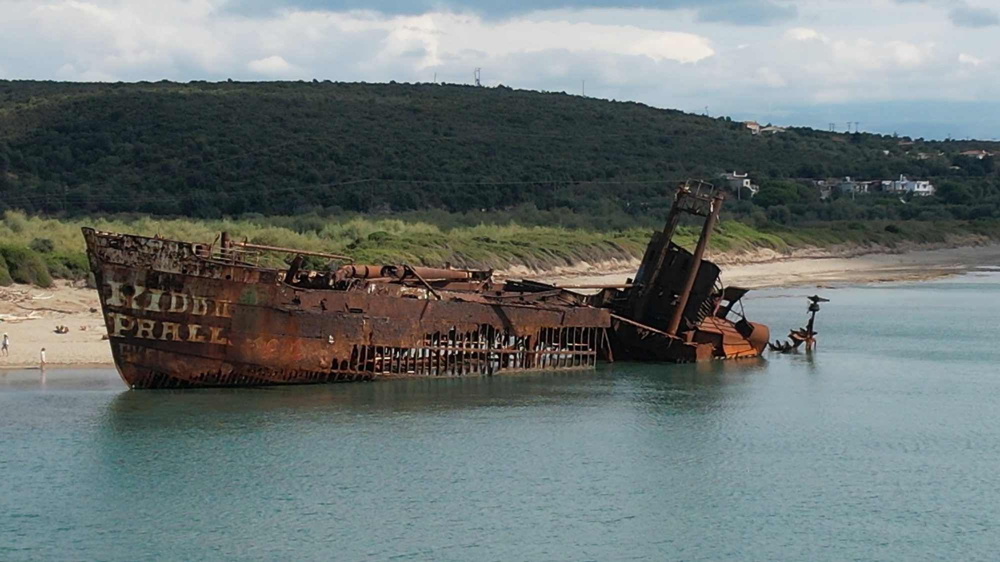
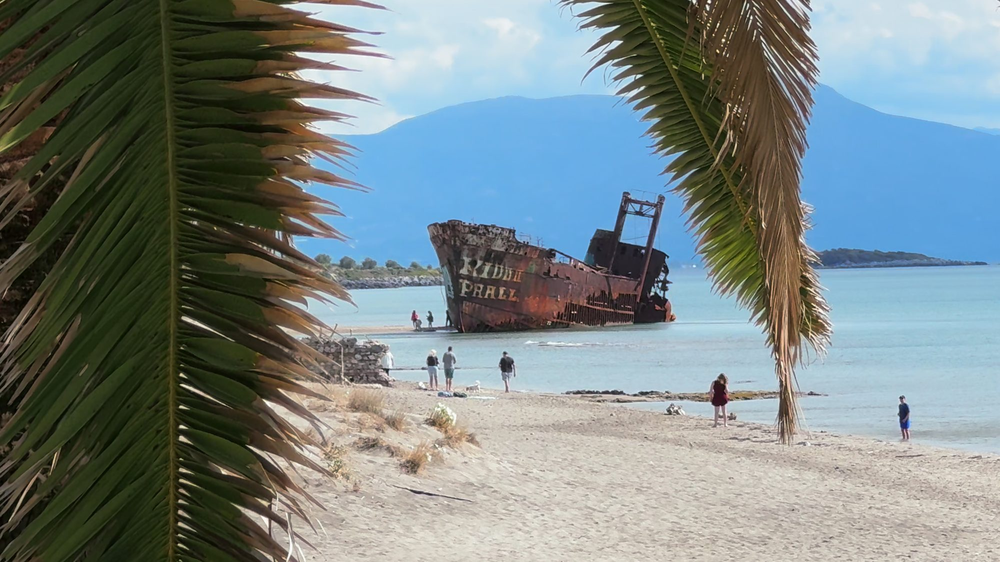
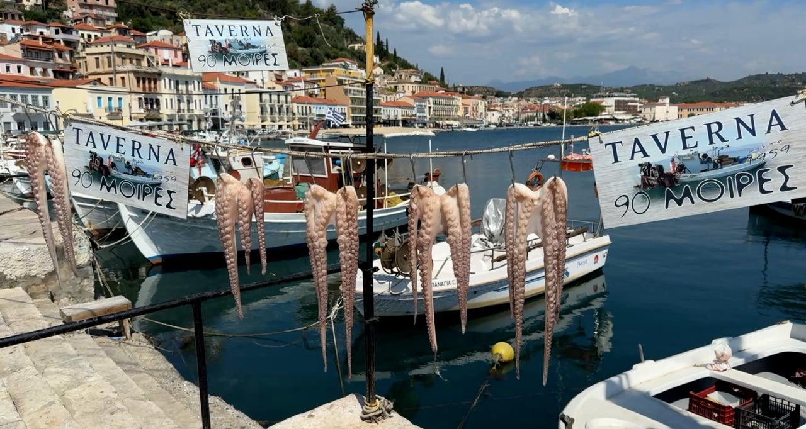
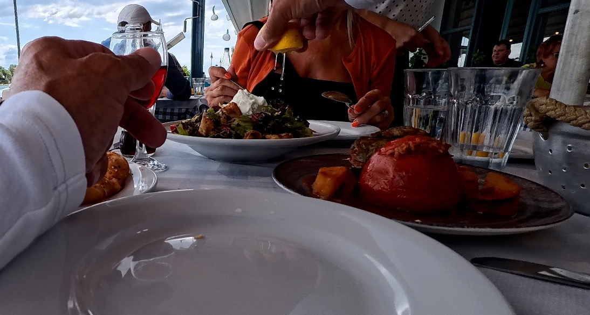
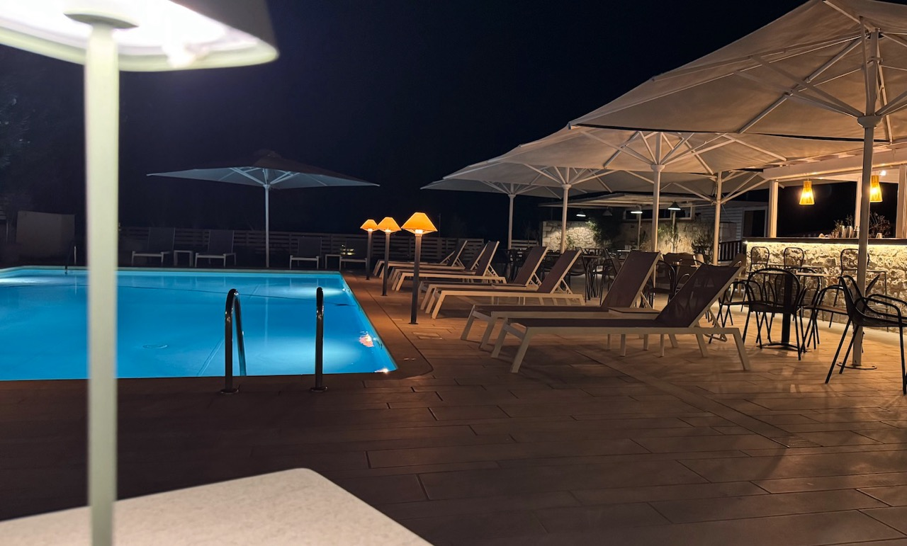

After the winding mountain roads and remote beaches of Vigklavia, our next stop was Gythio, a charming harbour town on the edge of the Mani peninsula. With colourful waterfront buildings, fishing boats bobbing in the marina and cafés full of people seemingly in no hurry whatsoever, it was a welcome change of pace.
Gythio has a wonderfully traditional Greek atmosphere, and after exploring some of the wilder corners of the Peloponnese, we were ready for a little harbour-side wandering, some good food and, as it turned out, a touch of luxury at Thirides Beach Resort.
GYTHIO – COFFEE, HARBOURSIDE STROLLS AND TRADITIONAL GREECE
Often described as the gateway to the Mani peninsula, Gythio was once the ancient port of Sparta. Today, its colourful neoclassical buildings climb the hillside above the harbour, giving it a character that feels almost more like an island town than somewhere on the mainland. The waterfront is the heart of the town, with fishing boats and pleasure craft sharing the marina while cafés and tavernas line the promenade.
Gythio is perfect for a leisurely wander, but it's equally suited to doing very little.
Greek coffee culture is something we've come to appreciate on our travels. Sitting outside, chatting with friends and watching the world go by seems to be considered a perfectly respectable way to spend several hours. Nobody appears to be clock-watching or rushing off to tick the next attraction off a list. Frankly, they're onto something.
Away from the harbour, little streets lead past traditional shops and local businesses, giving you a glimpse of everyday Greek life. It's not a purpose-built tourist resort, and that's part of its appeal.
CRANAE ISLAND – A LITTLE SLICE OF GREEK MYTHOLOGY

One place worth visiting is Cranae Island, a small islet connected to Gythio by a causeway. It's an easy addition to a stroll around town and offers lovely views back towards the harbour.
Here you'll find the historic Tzanetakis Tower and a striking stone lighthouse, both adding interest to this peaceful little spot, but Cranae has a rather dramatic backstory.
According to Greek mythology, this was where Helen of Troy and Paris spent their first night together after leaving Sparta, before sailing for Troy. Their elopement would ultimately help spark the legendary Trojan War. Quite a lot of trouble for one romantic getaway.
Today, the island is a peaceful place to stretch your legs, take photographs and enjoy the views. You don't need hours to explore it, so there's little excuse for missing it while you're in Gythio.
THE GHOST SHIP OF VALTAKI BEACH – A SHIPWRECK WITH A VIEW

Just outside Gythio, at Valtaki Beach, lies one of the area's most unusual landmarks: the Dimitrios shipwreck, an abandoned ship resting on a stretch of golden sand. It's a wonderfully photogenic sight, although its story is rather less glamorous than its appearance.
The ship docked in Gythio in 1981 following engine trouble and financial and crew difficulties. Eventually abandoned and declared unsafe, it was later swept away during severe weather and ran aground on Valtaki Beach, where it has remained ever since.
Slowly decaying under the relentless effects of sun, sea and wind, the rusting vessel has become an iconic local attraction, drawing visitors keen to photograph this unlikely addition to the coastline and what a backdrop it makes.
At the end of the beach, Glyfada Beach Bar offers an excellent, unobstructed view of the Dimitrios, making it the perfect place to admire the wreck without having to stand on the sand squinting into the sunshine.

We stopped for an iced coffee, which turned out to be one of the best we'd had on our travels. With wooden sunbeds and umbrellas dotted along the beach, plus full beachside service, it was an easy place to settle in for a while. Sunbeds were charged separately at around €5 per person when we visited, but for the setting and the view, we thought it was well worth it.
Naturally, we couldn't resist launching the drone for a better look at the shipwreck from above. From the beach, it's an impressive sight; from the air, you get a much better sense of just how dramatically this enormous vessel sits against the golden sand and blue sea.
It's a fascinating contrast: a ship that once sailed the seas, now slowly surrendering to the elements, with holidaymakers sipping iced coffee and enjoying the sunshine just a short distance away.
If you're visiting Gythio, make time for Valtaki Beach. The ghost ship is a photographer's dream, and Glyfada Beach Bar makes it very easy to turn a quick sightseeing stop into a thoroughly enjoyable beach break.
LUNCH BY THE WATERFRONT – SIMPLE GREEK FOOD AT ITS BEST

After our wander around town, we found a wonderful waterfront taverna, 90 Moires, and settled down for lunch.

We ordered spinach pie, stuffed peppers and tomatoes, and a lovely fresh salad, all washed down with a glass of red wine. Everything tasted homemade, just as you'd hope. No complicated menus or fancy presentation, just good, honest Greek food prepared with care.
It's these simple experiences that make travelling around Greece such a pleasure. Sitting beside the water, enjoying freshly prepared food and watching the boats come and go is an attraction in itself and if lunch happens to last a little longer than planned, who's going to complain? We're certainly not ones to rush a good meal.
THIRIDES BEACH RESORT – A LITTLE TOUCH OF LUXURY
Just outside Gythio, we checked into Thirides Beach Resort, and what a lovely place it turned out to be.
Built in traditional Mani-style stone architecture, the resort combines local character with understated luxury. Soft creams and sage greens create a calm, natural feel that sits beautifully within the surroundings.
The swimming pool is a real highlight, with an outdoor bar and dining area that make it tempting to spend much of the day there.
Then there's the beach, directly across the road. Hotel guests have complimentary use of sunbeds and parasols, making it wonderfully easy to switch between the pool and the sea. No searching for parking, hauling beach bags across the sand or trying to squeeze under a tiny patch of shade. Just grab your towel and go.
Our room was spacious, with high ceilings and a lovely balcony fitted with shutters and fly screens. The bathroom was enormous, with both a bath and a shower, and there was even a complimentary bottle of wine waiting for us on arrival.
It's those little touches that make a stay feel special. The whole resort had a relaxed, welcoming atmosphere without feeling overly formal.
BREAKFAST WITH A VIEW
Breakfast was another highlight, with a generous buffet offering eggs and omelettes, meats and cheeses, salads, Greek yoghurt, fresh fruit, cakes, nuts, seeds, honey, cereals, tea, coffee and fruit juices. It was quite a spread.
We enjoyed sitting outside overlooking the pool as the morning sun began to rise. With the temperature still comfortable and another sunny day ahead, there was no need to hurry.
Of course, a buffet like that presents its own challenges. There's always the temptation to try a little bit of everything, which can turn breakfast into a three-course event before you've even left the hotel.
Still, if you're going to fuel up for a day exploring the Peloponnese, you might as well do it properly.
EVENINGS BY THE POOL

After a day exploring or relaxing on the beach, the outdoor bar was the perfect place to wind down. As the light faded and the temperature softened, we'd settle down with a drink overlooking the pool and enjoy the peaceful surroundings.
Thirides is close enough to Gythio to pop into town for a wander or a meal, but far enough away to offer a quieter retreat when you're ready to switch off.
That's an important balance on a road trip. We love exploring new places, but we also appreciate having somewhere comfortable to return to at the end of the day.
There's a difference between enjoying a holiday and needing another holiday to recover from it.
At Thirides, we had the best of both worlds: traditional Greek life when we wanted to get out and about, and a beautiful pool and beach when we fancied doing absolutely nothing.
PRACTICAL TIPS FOR VISITING GYTHIO AND THIRIDES BEACH RESORT
How long should you stay?
Allow half a day to explore Gythio, including the harbour, waterfront cafés and Cranae Island. Don't forget to allow time for Valtaki Beach and the shipwreck. One or two nights gives you time to enjoy the town and make the most of the resort.
Getting around:
A hire car is useful for exploring the Mani peninsula and the wider Peloponnese. Gythio makes a convenient stop on a southern Greece road trip.
Where to stay:
Thirides Beach Resort offers traditional Mani-style architecture, modern comforts, a swimming pool and easy beach access. Check directly with the hotel for current facilities, prices and seasonal availability.
What to see:
Don't miss Cranae Island, with its historic tower, lighthouse and harbour views, and the Dimitrios shipwreck at Valtaki Beach. Comfortable shoes are useful for exploring the town's streets.
Food and drink:
Choose a waterfront taverna for traditional Greek dishes, fresh salads and a leisurely lunch overlooking the marina. Glyfada Beach Bar is also worth a stop for its shipwreck views and excellent iced coffee.
OUR VERDICT – IS GYTHIO WORTH VISITING?
Absolutely.
Gythio might not have the headline-grabbing beaches or dramatic mountain scenery of other parts of the Mani peninsula, but its colourful harbour, traditional atmosphere and relaxed café culture make it a lovely place to stop.
Add a waterfront lunch, a wander around Cranae Island and the rather unusual sight of the Dimitrios shipwreck, and you've got an enjoyable visit without needing an exhausting sightseeing schedule.
Thirides Beach Resort adds another dimension, offering a stylish and comfortable place to unwind after days spent exploring.
For us, the combination worked beautifully. Gythio provided a taste of traditional Greece, while Thirides offered a little indulgence at the end of the day.
And sometimes, that's exactly what you want from a Greek road trip: somewhere with character to explore, followed by a beautiful place to put your feet up and do absolutely nothing. Preferably beside a swimming pool, with a drink in hand.